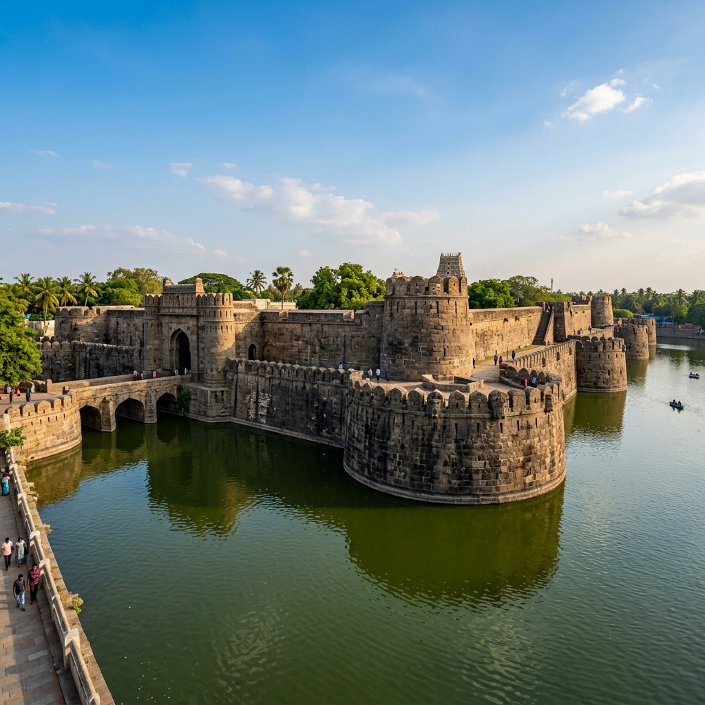

Explore the magnificent 16th-century Vellore Fort, Sripuram Golden Temple, scenic Yelagiri Hills, and other historical landmarks.
View PlacesAccess essential local business listings in Vellore, including premium hotels, residency stays, bank branches, and ATM centres.
View DirectoryFind local transport details, including reliable cab services, taxi operators, and official tourism contacts to guide your journey.
View Services
A grand 16th-century granite fortress. Famous for its massive ramparts, wide water moat, and the historic Jalakandeswarar Temple.

A spiritual oasis and architectural marvel coated in pure gold leaf, positioned in a lush star-shaped landscape pathway.
A serene, rustic hill station surrounded by mountains and orchards. Perfect for boating, trekking, and nature trails.
Locate the historic Vellore district on the map below. Easily find transportation hubs, routes, and nearby sites.